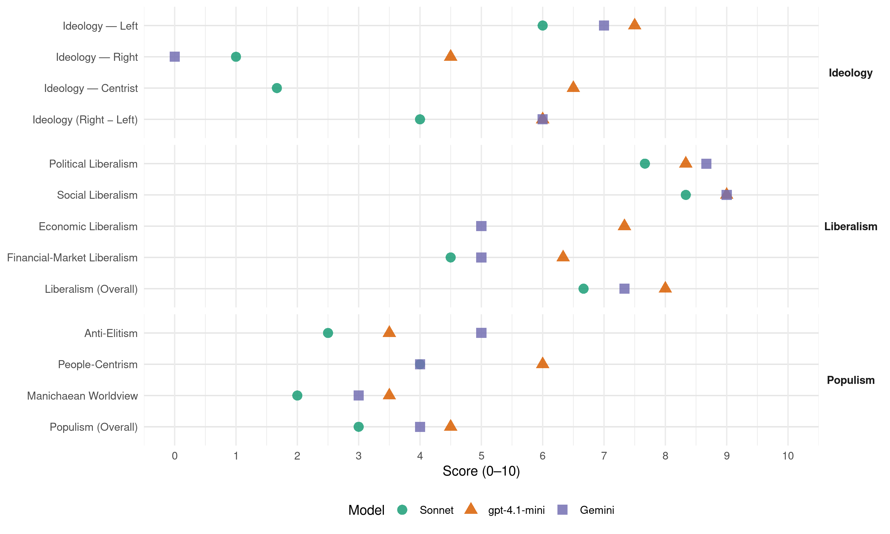

HaAvoda (Israel, 2019)
manifesto_id 72323_201904
Get full text: This site shows derived annotations and short verbatim quotes only. The full manifesto text is © Manifesto Project / WZB — obtain it via manifesto-project.wzb.eu using the manifesto_id above.
Headline scores
| Dimension | Sonnet | gpt-4.1-mini | Gemini |
|---|---|---|---|
| Populism (Overall) | 3.0 | 4.5 | 4.0 |
| Anti-Elitism | 2.5 | 3.5 | 5.0 |
| People-Centrism | 4.0 | 6.0 | 4.0 |
| Manichaean Worldview | 2.0 | 3.5 | 3.0 |
| Ideology (Right − Left) | 4.0 | 6.0 | 6.0 |
| Liberalism (Overall) | 6.7 | 8.0 | 7.3 |
| Political Liberalism | 7.7 | 8.3 | 8.7 |
| Social Liberalism | 8.3 | 9.0 | 9.0 |
| Economic Liberalism | – | 7.3 | 5.0 |
| Financial-Market Liberalism | 4.5 | 6.3 | 5.0 |
Evidence per dimension
Economic Liberalism
Gemini · score 5.0 · verified · chunk 1
“שילוב בין כלכלת שוק משגשגת לבין מעורבות ממשלה”
מפלגת העבודה רואה בשילוב בין כלכלת שוק משגשגת לבין מעורבות ממשלה בהסדרת הפעילות במשק את
Gemini · score 6.0 · verified · chunk 2
“במטרה לייצר תחרות שתפחית את”
יצירת שקיפות בגובה הריבית בין נותני האשראי, במטרה לייצר תחרות שתפחית את הריביות. - גיבוש
Gemini · score 4.0 · verified · chunk 3
“מחיר אחיד למוצרים זהים בסניפים”
- תיקון לחוק הגנת הצרכן, לפיו יהיה מחיר אחיד למוצרים זהים בסניפים שונים של רשתות שיווק, כדי שאלה לא
gpt-4.1-mini · score 8.0 · verified · chunk 1
“שילוב בין כלכלת שוק משגשגת לבין מעורבות ממשלה בהסדרת הפעילות במשק”
מפלגת העבודה רואה בשילוב בין כלכלת שוק משגשגת לבין מעורבות ממשלה בהסדרת הפעילות במשק את הבסיס לצמיחה כלכלית שתחלחל אל כל שדרות האוכלוסייה.
gpt-4.1-mini · score 7.0 · verified · chunk 2
“קידום שקיפות מלאה בניהול תהליכי קביעת התקציב וההעברות התקציביות”
ממשלה בראשות מפלגת העבודה תפעל להשגתם של היעדים הבאים:- קידום שקיפות מלאה בניהול תהליכי קביעת התקציב וההעברות התקציביות הנדרשות מעת לעת במהלך השנה התקציבית.
gpt-4.1-mini · score 7.0 · verified · chunk 3
“הצעת חוק השקעות זרות, לפיה יוטל פיקוח על עסקאות מיזוג”
חברה וכלכלה: עקרונות יסוד - הצעת חוק חובת הדיווח של מוסדות פיננסיים על כספים ללא דורש, אשר היקפם מוערך במיליארדי שקלים. של ח’‘כ עמר בר-לב. - הצעת חוק השקעות זרות, לפיה יוטל פיקוח על עסקאות מיזוג, רכישה או השקעה של גורמים זרים בחברות ישראליות, על מנת למנוע פגיעה בביטחון הלאומי של מדינת ישראל. של ח’’כ עמר בר-לב.
Sonnet · score 5.0 · mixed · chunk 1
“שילוב בין כלכלת שוק משגשגת לבין מעורבות ממשלה”
מפלגת העבודה רואה בשילוב בין כלכלת שוק משגשגת לבין מעורבות ממשלה בהסדרת הפעילות במשק את הבסיס לצמיחה כלכלית שתחלחל אל כל שדרות האוכלוסייה.
Sonnet · score 5.0 · mixed · chunk 2
“ביורוקרטיה ורגולציה מוגזמות ומיותרות”
המדינה - שלא מייצרת להם תנאי שוק הולמים, ובעיקר מכבידה עליהם בביורוקרטיה ורגולציה מוגזמות ומיותרות
Sonnet · score 5.0 · mixed · chunk 3
“פיקוח על עסקאות מיזוג, רכישה או השקעה”
הצעת חוק השקעות זרות, לפיה יוטל פיקוח על עסקאות מיזוג, רכישה או השקעה של גורמים זרים בחברות ישראליות
Financial-Market Liberalism
Gemini · score 5.0 · verified · chunk 2
“הבטחת אשראי זול ונגיש לעסקים”
בירוקרטיה ורגולציה מוגזמות ומיותרות. אפשר לשנות את זה. ממשלה בראשות מפלגת העבודה תפעל להשגתם של היעדים הבאים:]+[ פישוט תהליכי הקמה וניהול של עסקים קטנים, תוך השגת שקיפות של נהלים וכללים לשם רישום עסק ברשות המקומית ובמוסדות ממלכתיים, וריכוז כל ההליכים הבירוקרטיים לפתיחת עסק ברשות המקומית בידי גורם אחד (one stop shop). - הבטחת אשראי זול ונגיש לעסקים קטנים ובינוניים, על ידי יצירת ערוצי אשראי זמינים בריביות סבירות באמצעות הבנקים וגופי מימון עצמאיים נפרדים, ובאמצעות הקמת קרן אשראי סחירה המיועדת לעסקים קטנים ובינוניים, שתאפשר השקעה של גופים מוסדיים. - יצירת שקיפות בגובה הריבית בין נותני האשראי, במטרה לייצר תחרות שתפחית את הריביות.
Gemini · score 5.0 · verified · chunk 3
“חובת הדיווח של מוסדות פיננסיים”
חברה וכלכלה: עקרונות יסוד - הצעת חוק חובת הדיווח של מוסדות פיננסיים על כספים ללא דורש, אשר היקפם מוערך
gpt-4.1-mini · score 7.0 · verified · chunk 1
“חיוב בחקיקה של כל קרנות הפנסיה להצעת מסלול ללא ניהול אקטיבי”
הגברת התחרות בשווקים תוך מאבק בלתי מתפשר בקרטלים ומונופולים עסקיים. חיוב בחקיקה של כל קרנות הפנסיה להצעת מסלול ללא ניהול אקטיבי בדמי ניהול מינימליים ומפוקחים.
gpt-4.1-mini · score 6.0 · verified · chunk 2
“חובת הדיווח של מוסדות פיננסיים על כספים ללא דורש”
הצעת חוק חובת הדיווח של מוסדות פיננסיים על כספים ללא דורש, אשר היקפם מוערך במיליארדי שקלים.
gpt-4.1-mini · score 6.0 · verified · chunk 3
“תיקון לחוק הפיקוח על שירותים פיננסיים, לפיו דמי הניהול המרביים”
יוקר המחייה - תיקון חוק הפיקוח על שירותים פיננסיים, לפיו דמי הניהול המרביים שניתן לגבות מהחוסכים בקרנות הפנסיה וכך להגדיל משמעותית את הסכום שיוותר לחוסכים להבטחת עתידם הכלכלי. של ח’’כ מיכל בירן.
Sonnet · score 4.0 · verified · chunk 1
“פיקוח על מחירי הגז”
לצורך כך יש להטיל פיקוח על מחירי הגז, ולהעמידם על מחיר ראוי אשר יוזיל את עלויות החשמל באופן ניכר.
Sonnet · score 5.0 · verified · chunk 2
“הבטחת אשראי זול ונגיש לעסקים קטנים”
הבטחת אשראי זול ונגיש לעסקים קטנים ובינוניים, על ידי יצירת ערוצי אשראי זמינים בריביות סבירות באמצעות הבנקים
Sonnet · score 5.0 · mixed · chunk 3
“דמי הניהול המרביים שניתן לגבות מהחוסכים בקרנות הפנסיה”
תיקון חוק הפיקוח על שירותים פיננסיים, לפיו דמי הניהול המרביים שניתן לגבות מהחוסכים בקרנות הפנסיה וכך להגדיל משמעותית את הסכום שיוותר לחוסכים
Political Liberalism
Gemini · score 9.0 · verified · chunk 1
“לשמור על הדמוקרטיה שלנו ועל מערכות הממשל”
קציבת כהונה לראש הממשלה כדי לשמור על הדמוקרטיה שלנו ועל מערכות הממשל מפני סיאוב, שחיתות וקיפאון
Gemini · score 9.0 · verified · chunk 2
“עקרונות שלטון החוק, הפרדת הרשויות”
חיזוק הדמוקרטיה, יסודות הממשל והשירות הציבורי: עקרונות שלטון החוק, הפרדת הרשויות ועצמאות מערכת המשפט
Gemini · score 8.0 · verified · chunk 3
“ערכים דמוקרטיים וחברתיים וביצירת שיח”
יציבה, משגשגת, יעילה ויצירתית היא מרכיב מרכזי בקידומם של ערכים דמוקרטיים וחברתיים וביצירת שיח פורה ומתמשך בין האזרחים לבין רשויות השלטון.
gpt-4.1-mini · score 9.0 · verified · chunk 1
“מדינה יהודית ודמוקרטית, שמעניקה שוויון זכויות אזרחי גמור”
המצע מבוסס על ערכי היסוד של מפלגת העבודה: ביטחון, חתירה לשלום וכלכלה צודקת - במדינה יהודית דמוקרטית וליברלית, שמעניקה שוויון זכויות אזרחי גמור לכל תושביה, ללא הבדלי דת, מוצא ומין.
gpt-4.1-mini · score 8.0 · verified · chunk 2
“עקרונות שלטון החוק, הפרדת הרשויות ועצמאות מערכת המשפט”
עקרונות שלטון החוק, הפרדת הרשויות ועצמאות מערכת המשפט הם אבני היסוד של הדמוקרטיה הישראלית. אלו תנאים הכרחיים להבטחת עתידה של מדינת ישראל כמדינה יהודית ודמוקרטית ברוח עקרונותיה של מגילת העצמאות.
gpt-4.1-mini · score 8.0 · verified · chunk 3
“חיזוק הדמוקרטיה ושיטת הממשל”
חיזוק הדמוקרטיה ושיטת הממשל - הצעת חוק לפיה גופים ציבוריים וספקי שירות יתנו מענה לציבור בעזרת מיילים, שיוכלו להחליף מכשירי פקס והגעה פיזית למשרדי הממשלה. של ח’’כ סתיו שפיר. - תיקון לחוק יסוד: הממשלה, לפיו ראש הממשלה יהיה מחויב למנות לעצמו ממלא מקום. מרב מיכאלי.
Sonnet · score 7.0 · verified · chunk 1
“לשמור על הדמוקרטיה שלנו”
כדי לשמור על הדמוקרטיה שלנו ועל מערכות הממשל מפני סיאוב, שחיתות וקיפאון, אנו מתחייבים לקדם חקיקה אשר תקצוב את כהונת ראש הממשלה לשתי קדנציות בלבד.
Sonnet · score 8.0 · verified · chunk 2
“שלטון החוק, הפרדת הרשויות והבטחת שוויון זכויות”
מחויבות בלתי מתפשרת ליסודות הממלכתיות, שלטון החוק, הפרדת הרשויות והבטחת שוויון זכויות לכל
Sonnet · score 8.0 · verified · chunk 3
“חיזוק הדמוקרטיה ושיטת הממשל”
חיזוק הדמוקרטיה ושיטת הממשל — תיקון לחוק יסוד: הממשלה, לפיו תוגבל כהונתו של ראש הממשלה לשתי כהונות רצופות
Liberalism (Overall)
Gemini · score 8.0 · verified · chunk 1
“שוויון זכויות אזרחי גמור לכל תושביה”
יהודית דמוקרטית וליברלית, שמעניקה שוויון זכויות אזרחי גמור לכל תושביה, ללא הבדלי דת, מוצא
Gemini · score 7.0 · verified · chunk 2
“עקרונות שלטון החוק, הפרדת הרשויות”
חיזוק הדמוקרטיה, יסודות הממשל והשירות הציבורי: עקרונות שלטון החוק, הפרדת הרשויות ועצמאות מערכת המשפט
Gemini · score 7.0 · verified · chunk 3
“ערכים דמוקרטיים וחברתיים וביצירת שיח”
יציבה, משגשגת, יעילה ויצירתית היא מרכיב מרכזי בקידומם של ערכים דמוקרטיים וחברתיים וביצירת שיח פורה ומתמשך בין האזרחים לבין רשויות השלטון.
gpt-4.1-mini · score 8.0 · verified · chunk 1
“מדינה יהודית דמוקרטית וליברלית, שמעניקה שוויון זכויות אזרחי גמור”
המצע מבוסס על ערכי היסוד של מפלגת העבודה: ביטחון, חתירה לשלום וכלכלה צודקת - במדינה יהודית דמוקרטית וליברלית, שמעניקה שוויון זכויות אזרחי גמור לכל תושביה, ללא הבדלי דת, מוצא ומין.
gpt-4.1-mini · score 8.0 · verified · chunk 2
“עקרונות שלטון החוק, הפרדת הרשויות ועצמאות מערכת המשפט”
עקרונות שלטון החוק, הפרדת הרשויות ועצמאות מערכת המשפט הם אבני היסוד של הדמוקרטיה הישראלית. אלו תנאים הכרחיים להבטחת עתידה של מדינת ישראל כמדינה יהודית ודמוקרטית ברוח עקרונותיה של מגילת העצמאות.
gpt-4.1-mini · score 8.0 · verified · chunk 3
“חיזוק הדמוקרטיה ושיטת הממשל”
חיזוק הדמוקרטיה ושיטת הממשל - הצעת חוק לפיה גופים ציבוריים וספקי שירות יתנו מענה לציבור בעזרת מיילים, שיוכלו להחליף מכשירי פקס והגעה פיזית למשרדי הממשלה. של ח’’כ סתיו שפיר. - תיקון לחוק יסוד: הממשלה, לפיו ראש הממשלה יהיה מחויב למנות לעצמו ממלא מקום. מרב מיכאלי.
Sonnet · score 6.0 · verified · chunk 1
“שוויון זכויות מלא לקהילה הלהט”בית”
מפלגת העבודה מחויבת לשוויון זכויות מלא לקהילה הלהט”בית על כל גווניה. כל בני האדם שווים וכל האהבות שוות הן.
Sonnet · score 7.0 · verified · chunk 2
“עצמאותה של הרשות השופטת ויעילות עבודתה”
עצמאותה של הרשות השופטת ויעילות עבודתה הן מרכיב חיוני בחוסנה הדמוקרטי של מדינת ישראל
Sonnet · score 7.0 · verified · chunk 3
“חיזוק החברה האזרחית בישראל”
חיזוק החברה האזרחית בישראל, תוך הדגשת הערכים המוספים של ארגוני המגזר השלישי ובלימת הטשטוש בין תחומי האחריות של רשויות השלטון
Anti-Elitism
Gemini · score 7.0 · verified · chunk 1
“מלעיטים אותנו בשחיתות, פילוג וארס”
במקום ממלכתיות ושפה של טוב משותף - מלעיטים אותנו בשחיתות, פילוג וארס. השיח הפוליטי והתקשורתי
Gemini · score 3.0 · verified · chunk 2
“פתיחת מתווה הגז המושחת”
משק האנרגיה: התחייבות מרכזית:פתיחת מתווה הגז המושחת משאב הגז הטבעי הוא נכס
gpt-4.1-mini · score 3.0 · verified · chunk 1
“במקום להציג דרך וחזון, אנחנו שומעים מהמנהיגות שלנו שיסוי ושנאה”
אלו ימים עם תרבות פוליטית מקולקלת. במקום להציג דרך וחזון, אנחנו שומעים מהמנהיגות שלנו שיסוי ושנאה. במקום ממלכתיות ושפה של טוב משותף - מלעיטים אותנו בשחיתות, פילוג וארס.
gpt-4.1-mini · score 4.0 · verified · chunk 2
“הנחת שחיתות שלטונית שפשה בכל חלקה טובה בישראל”
מפלגת העבודה מתייחסת באפס סובלנות לנגע השחיתות השלטונית, שפשה בכל חלקה טובה בישראל ומאיים על שלטון החוק והממשל התקין, ומחויבת לנקוט באמצעים דרסטיים ונרחבים על מנת למגרו.
Sonnet · score 4.0 · mixed · chunk 1
“ממשלות הימין האחרונות נסוגו מעקרונות אלו”
מדינת ישראל נוסדה על ערכי הערבות ההדדית… ממשלות הימין האחרונות נסוגו מעקרונות אלו, הפקירו את עתידם של אזרחי ישראל לכוחות השוק
Sonnet · score 3.0 · verified · chunk 2
“תרבות השחיתות השלטונית והשלכותיה המסוכנות”
נוכח תרבות השחיתות השלטונית והשלכותיה המסוכנות לישראל, גיבשה מפלגת העבודה תכנית מפורטת למיגור השחיתות בישראל
Sonnet · score 2.0 · verified · chunk 3
“אילי הון נגד גורמים שונים”
בית המשפט יוכל למחוק על הסף ‘תביעות השתקה’ של אילי הון נגד גורמים שונים בעילה של הוצאת דיבה
Ideology — Centrist
gpt-4.1-mini · score 7.0 · verified · chunk 1
“לשים את האזרחים בראש סדר העדיפויות”
אני מאמין באמת ובתמים שאפשר להפוך את ישראל למדינה הכי טובה בעולם. לשים את האזרחים בראש סדר העדיפויות, ולהקפיץ משמעותית את איכות החיים שלנו כאן.
gpt-4.1-mini · score 6.0 · verified · chunk 2
“מדינת ישראל מחויבת להתנהגות ראויה ומוסרית כלפי מבקשי המקלט”
כמדינתו של העם היהודי, למוד הנדודים והסבל, ובהתאם לכללים הבינלאומיים, מדינת ישראל מחויבת להתנהגות ראויה ומוסרית כלפי מבקשי המקלט, לצד מחויבות רשויות השלטון בישראל לפעול למניעת הגירת עבודה בלתי חוקית.
Sonnet · score 2.0 · verified · chunk 1
“דרך חלופית, ערכית ומעשית”
מפלגת העבודה מציעה לאזרחי ישראל מנהיגות המחויבת לשינוי ולדרך אחרת מזו של הממשלות האחרונות. דרך חלופית, ערכית ומעשית, המעמידה בראש סדר העדיפויות את אזרחי ואזרחיות ישראל.
Sonnet · score 2.0 · verified · chunk 2
“הציבור בוחר בפוליטיקאים שישרתו אותו”
מרוקנת מתוכן את הרעיון המסדר בדמוקרטיה - לפיו הציבור בוחר בפוליטיקאים שישרתו אותו, ולא את עצמם
Sonnet · score 1.0 · verified · chunk 3
“משרתים את כללי אוכלוסיית ישראל”
הצעות חוק אלה עוסקות במגוון רחב של נושאים, אשר משרתים את כללי אוכלוסיית ישראל
Ideology — Left
Gemini · score 8.0 · verified · chunk 1
“מבוסס על ערכי היסוד של מפלגת העבודה: ביטחון, חתירה לשלום וכלכלה צודקת”
דת ומדינה ועד חיי תרבות ופנאי. המצע מבוסס על ערכי היסוד של מפלגת העבודה: ביטחון, חתירה לשלום וכלכלה צודקת - במדינה יהודית דמוקרטית
Gemini · score 6.0 · verified · chunk 2
“הגנה על זכויות העובדים וקידומו”
זכויות עובדים ושוק התעסוקה: - ההגנה על זכויות העובדים וקידומו של שוק תעסוקה הוגן
gpt-4.1-mini · score 8.0 · verified · chunk 1
“לפעול לצמצום הפערים החברתיים, למיגור העוני”
מפלגת העבודה מתחייבת להשיב לממשלת ישראל את האחריות לרווחה החברתית והכלכלית של כל אזרחי ישראל, ולפעול לצמצום הפערים החברתיים, למיגור העוני, לחיזוק הפריפריה, לשיקום מערכות החינוך והבריאות, ולפתרון משבר הדיור; תוך חיזוקה ופיתוחה של הכלכלה הישראלית.
gpt-4.1-mini · score 7.0 · verified · chunk 2
“צמצום ההשקעה הממשלתית בהוצאה האזרחית הוא מרכיב מרכזי בהידרדרות המצב החברתי בישראל”
צמצום ההשקעה הממשלתית בהוצאה האזרחית הוא מרכיב מרכזי בהידרדרות המצב החברתי בישראל ובהתרחבות מעגלי העוני והמצוקה. צמצום ההשקעה הביא לירידה חריפה ברמת השירותים החברתיים ובמקביל להגברת הנטל המונח על כתפי האזרחים.
Sonnet · score 6.0 · verified · chunk 1
“כלכלה צודקת וצמצום פערים”
כמפלגה הפועלת לאור ערכי צדק חברתי וצמצום פערים, אנחנו מחויבים להמשך העלאה של שכר המינימום.
Sonnet · score 6.0 · verified · chunk 2
“הגנה על זכויות העובדים וקידומו של שוק תעסוקה הוגן”
ההגנה על זכויות העובדים וקידומו של שוק תעסוקה הוגן הם תנאי יסוד לקיומה של חברה צודקת וכלכלה משגשגת
Sonnet · score 6.0 · verified · chunk 3
“זכויות חברתיות, ויובטח קיום ערכי השוויון”
הצעת חוק יסוד: זכויות חברתיות, לפיה יעוגנו הזכויות החברתיות של אדם, ויובטח קיום ערכי השוויון, הצדק החברתי, והערבות ההדדית
Ideology (Right − Left)
Gemini · score 7.0 · verified · chunk 1
“מבוסס על ערכי היסוד של מפלגת העבודה: ביטחון, חתירה לשלום וכלכלה צודקת”
דת ומדינה ועד חיי תרבות ופנאי. המצע מבוסס על ערכי היסוד של מפלגת העבודה: ביטחון, חתירה לשלום וכלכלה צודקת - במדינה יהודית דמוקרטית
Gemini · score 5.0 · verified · chunk 2
“הגנה על זכויות העובדים וקידומו”
זכויות עובדים ושוק התעסוקה: - ההגנה על זכויות העובדים וקידומו של שוק תעסוקה הוגן
gpt-4.1-mini · score 7.0 · verified · chunk 1
“לשים את האזרחים בראש סדר העדיפויות”
אני מאמין באמת ובתמים שאפשר להפוך את ישראל למדינה הכי טובה בעולם. לשים את האזרחים בראש סדר העדיפויות, ולהקפיץ משמעותית את איכות החיים שלנו כאן.
gpt-4.1-mini · score 5.0 · verified · chunk 2
“צמצום ההשקעה הממשלתית בהוצאה האזרחית הוא מרכיב מרכזי בהידרדרות המצב החברתי בישראל”
צמצום ההשקעה הממשלתית בהוצאה האזרחית הוא מרכיב מרכזי בהידרדרות המצב החברתי בישראל ובהתרחבות מעגלי העוני והמצוקה. צמצום ההשקעה הביא לירידה חריפה ברמת השירותים החברתיים ובמקביל להגברת הנטל המונח על כתפי האזרחים.
Sonnet · score 4.0 · verified · chunk 1
“כלכלה צודקת וצמצום פערים”
כמפלגה הפועלת לאור ערכי צדק חברתי וצמצום פערים, אנחנו מחויבים להמשך העלאה של שכר המינימום.
Sonnet · score 4.0 · verified · chunk 2
“חברה צודקת וכלכלה משגשגת”
ההגנה על זכויות העובדים וקידומו של שוק תעסוקה הוגן הם תנאי יסוד לקיומה של חברה צודקת וכלכלה משגשגת
Sonnet · score 4.0 · verified · chunk 3
“הצדק החברתי, והערבות ההדדית”
יעוגנו הזכויות החברתיות של אדם, ויובטח קיום ערכי השוויון, הצדק החברתי, והערבות ההדדית
Ideology — Right
Gemini · score 0.0 · verified · chunk 2
“למנוע הגירת עבודה בלתי חוקית”
לצד מחויבות רשויות השלטון בישראל לפעול למניעת הגירת עבודה בלתי חוקית, הפוגעת בתעסוקתם
gpt-4.1-mini · score 6.0 · verified · chunk 1
“מדינת ישראל כמדינה יהודית ודמוקרטית”
מפלגת העבודה מציבה בפני ציבור הבוחרים חלופה רעיונית ושלטונית המבטיחה את עתידה של מדינת ישראל כמדינה יהודית ודמוקרטית, בטוחה בחוסנה ושואפת שלום וצדק חברתי, ברוח ערכיה של מגילת העצמאות.
gpt-4.1-mini · score 3.0 · verified · chunk 2
“חיזוק החקלאים ודור ההמשך בחקלאות”
הגנה על זכויות המושבים והקיבוצים במרחב ההתיישבות העובדת, כערובה לשמירת אורח חיים הכפרי, חיזוק החקלאים ודור ההמשך בחקלאות.
Sonnet · score 1.0 · verified · chunk 1
“מדינת הלאום של העם היהודי”
הגדרתה החד-משמעית של מדינת ישראל כמדינת הלאום של העם היהודי.
Sonnet · score 1.0 · verified · chunk 2
“מניעת הגירת עבודה בלתי חוקית”
מחויבות רשויות השלטון בישראל לפעול למניעת הגירת עבודה בלתי חוקית, הפוגעת בתעסוקתם של אזרחי ישראל
Sonnet · score 1.0 · verified · chunk 3
“לתנועות הנוער הציוניות”
לתנועות הנוער הציוניות ולמסלולי ההגשמה שהתפתחו מקרבן היה תפקיד מכונן בבנייתה של מדינת ישראל
Manichaean Worldview
Gemini · score 5.0 · verified · chunk 1
“שומעים מהמנהיגות שלנו שיסוי ושנאה”
במקום להציג דרך וחזון, אנחנו שומעים מהמנהיגות שלנו שיסוי ושנאה. במקום ממלכתיות ושפה של
Gemini · score 1.0 · verified · chunk 2
“השחיתות השלטונית היא רעה חולה”
מנהל תקין, טוהר מידות ושקיפות שלטונית. השחיתות השלטונית היא רעה חולה שיש למגר בהקדם
gpt-4.1-mini · score 4.0 · verified · chunk 1
“מלעיטים אותנו בשחיתות, פילוג וארס”
במקום ממלכתיות ושפה של טוב משותף - מלעיטים אותנו בשחיתות, פילוג וארס. השיח הפוליטי והתקשורתי שם במרכז את הרכילות במקום את המהות.
gpt-4.1-mini · score 3.0 · verified · chunk 2
“גל חקיקה עכור החותר לקעקוע יסודות השוויון”
בתקופת כהונתן של הממשלה היוצאת וזו שקדמה לה אנו עדים לכרסום מדאיג ומסוכן בצביונה הדמוקרטי של המדינה, בדמות גל חקיקה עכור החותר לקעקוע יסודות השוויון, כבוד האדם וחירותו.
Sonnet · score 3.0 · verified · chunk 1
“שיסוי ושנאה”
במקום להציג דרך וחזון, אנחנו שומעים מהמנהיגות שלנו שיסוי ושנאה. במקום ממלכתיות ושפה של טוב משותף - מלעיטים אותנו בשחיתות, פילוג וארס.
Sonnet · score 2.0 · verified · chunk 2
“כרסום מדאיג ומסוכן בצביונה הדמוקרטי”
בתקופת כהונתן של הממשלה היוצאת וזו שקדמה לה אנו עדים לכרסום מדאיג ומסוכן בצביונה הדמוקרטי של המדינה
Sonnet · score 1.0 · verified · chunk 3
“למנוע פגיעה באינטרס הציבורי”
מטרת החוק היא למנוע מצב של ניגוד אינטרסים שיכול להביא לפגיעה באינטרס הציבורי בכל הנוגע לבריאותו
People-Centrism
Gemini · score 6.0 · verified · chunk 1
“לשים את האזרחים בראש סדר העדיפויות”
להפוך את ישראל למדינה הכי טובה בעולם. לשים את האזרחים בראש סדר העדיפויות, ולהקפיץ משמעותית את איכות
Gemini · score 2.0 · verified · chunk 2
“שכל אזרחי ישראל צריכים ליהנות”
משאב הגז הטבעי הוא נכס שכל אזרחי ישראל צריכים ליהנות מפירותיו. לצורך כך נטיל
gpt-4.1-mini · score 7.0 · verified · chunk 1
“לשים את האזרחים בראש סדר העדיפויות”
אני מאמין באמת ובתמים שאפשר להפוך את ישראל למדינה הכי טובה בעולם. לשים את האזרחים בראש סדר העדיפויות, ולהקפיץ משמעותית את איכות החיים שלנו כאן.
gpt-4.1-mini · score 5.0 · verified · chunk 2
“העם היהודי, למוד הנדודים והסבל”
כמדינתו של העם היהודי, למוד הנדודים והסבל, ובהתאם לכללים הבינלאומיים, מדינת ישראל מחויבת להתנהגות ראויה ומוסרית כלפי מבקשי המקלט, לצד מחויבות רשויות השלטון בישראל לפעול למניעת הגירת עבודה בלתי חוקית.
Sonnet · score 6.0 · verified · chunk 1
“לשים את האזרחים בראש סדר העדיפויות”
אני מאמין באמת ובתמים שאפשר להפוך את ישראל למדינה הכי טובה בעולם. לשים את האזרחים בראש סדר העדיפויות, ולהקפיץ משמעותית את איכות החיים שלנו כאן.
Sonnet · score 3.0 · verified · chunk 2
“כי מה שמגיע לתושבי המרכז - מגיע גם לתושבי הפריפריה”
זו השקעה ממשלתית שתבטיח תעסוקה הולמת, תשתיות ראויות ומתן שירותי רווחה, חינוך, בריאות ותרבות ברמה הגבוהה ביותר. כי מה שמגיע לתושבי המרכז - מגיע גם לתושבי הפריפריה
Sonnet · score 3.0 · verified · chunk 3
“לטובת שמירה על ערכי הציונות והדמוקרטיה”
הצעות חוק אלה עוסקות במגוון רחב של נושאים, אשר משרתים את כללי אוכלוסיית ישראל, ולמען שמירה על ערכי הציונות והדמוקרטיה
Populism (Overall)
Gemini · score 6.0 · verified · chunk 1
“מלעיטים אותנו בשחיתות, פילוג וארס”
במקום ממלכתיות ושפה של טוב משותף - מלעיטים אותנו בשחיתות, פילוג וארס. השיח הפוליטי והתקשורתי
Gemini · score 2.0 · verified · chunk 2
“פתיחת מתווה הגז המושחת”
משק האנרגיה: התחייבות מרכזית:פתיחת מתווה הגז המושחת משאב הגז הטבעי הוא נכס
gpt-4.1-mini · score 5.0 · verified · chunk 1
“במקום להציג דרך וחזון, אנחנו שומעים מהמנהיגות שלנו שיסוי ושנאה”
אלו ימים עם תרבות פוליטית מקולקלת. במקום להציג דרך וחזון, אנחנו שומעים מהמנהיגות שלנו שיסוי ושנאה. במקום ממלכתיות ושפה של טוב משותף - מלעיטים אותנו בשחיתות, פילוג וארס.
gpt-4.1-mini · score 4.0 · verified · chunk 2
“הנחת שחיתות שלטונית שפשה בכל חלקה טובה בישראל”
מפלגת העבודה מתייחסת באפס סובלנות לנגע השחיתות השלטונית, שפשה בכל חלקה טובה בישראל ומאיים על שלטון החוק והממשל התקין, ומחויבת לנקוט באמצעים דרסטיים ונרחבים על מנת למגרו.
Sonnet · score 4.0 · verified · chunk 1
“לשים את האזרחים בראש סדר העדיפויות”
אני מאמין באמת ובתמים שאפשר להפוך את ישראל למדינה הכי טובה בעולם. לשים את האזרחים בראש סדר העדיפויות, ולהקפיץ משמעותית את איכות החיים שלנו כאן.
Sonnet · score 3.0 · verified · chunk 2
“מיגור השחיתות בישראל”
גיבשה מפלגת העבודה תכנית מפורטת למיגור השחיתות בישראל. המפלגה מתחייבת ליישמה מהיום הראשון שבו תרכיב את הממשלה הבאה
Sonnet · score 2.0 · verified · chunk 3
“אילי הון נגד גורמים שונים”
בית המשפט יוכל למחוק על הסף ‘תביעות השתקה’ של אילי הון נגד גורמים שונים בעילה של הוצאת דיבה
Social Liberalism